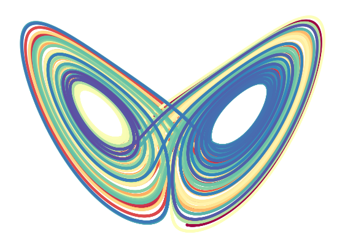
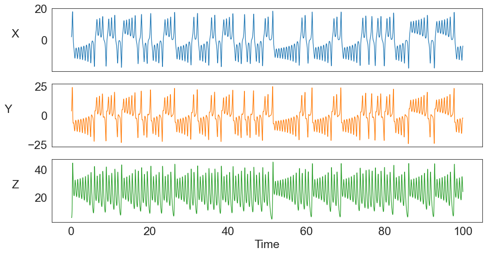
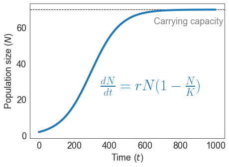

A chaotic butterfly
Math
Chaos, determinism, and predictibility.
Once upon a time
In 1963, meteorologist Edward Lorenz published a mathematical model for the dynamics of atmospheric convection. The equations are in very simplistic forms, but the resulting behaviour of the system is not. The way that its values change over time is enormously complex, making it impossible to predict its future state if no precise knowledge about its current state is available. Lorenz created the math, but at the same time, he also discovered it. The model has opened the door to and clarified various important concepts in math: Chaos, Fractals, Predictibility, and Determinism. These are more familiar to math specialists, but in the more general public, many probably have heard the term “the butterfly effect” at some point in their lives. The Lorenz model is also the mother of this concept.
The butterfly
The Lorenz system comprises of three dynamic elements, or variables, notated as \(X\) (rate of convection), \(Y\) (horizontal temperature), and \(Z\) (vertical temperature). The dynamics of these variables then are described by a set of equations called ordinary differential equations (ODE). These equations represent the rates of change of the variables, and they are as follows:
\[ \frac{dX}{dt} = \sigma (Y - X) \] \[ \frac{dY}{dt} = X (\rho - Z) - Y \] \[ \frac{dZ}{dt} = X Y - \beta Z \]
I would not go into the details of the equations, nor why Lorenz designed them to be so, nor how to solve them. I assure you, we can completely move on without them. So let’s now stick with this: \(\sigma\), \(\rho\), and \(\beta\) are parameters - they are constant, and the solutions of these equations will be the functions describing how the system state, i.e. the variables, change through time - mathematically \(X(t)\), \(Y(t)\), and \(Z(t)\).
To see the “butterfly”, I added some specifications to the model and in solving the equations:
1. \(\sigma=10\), \(\rho=28\), and \(\beta=8/3\)
2. The timepoints at which we would like to know the values of \(X\), \(Y\), and \(Z\). Here, I let them 100,000 timepoints evenly spaced from 0 to 100.
3. The initial condition, which is the system state at the initial timepoint. Here, it is a set of \(X_{t=0} = 0.1, Y_{t=0}=0.0\), and \(Z_{t=0}=0.0\).
Ready for the beauty?
So, what is this “butterfly” made of?
Technically, what you’re seeing is a 2D plot of \(X\) against \(Z\) values. I just hid the coordinate axes. Also, while the butterfly appears to be just a single line, but actually, they are 100,000 dots that sit very close together there. If you are able to zoom in, you should see the space between them. Wait, but why 100,000 dots? Remember that I talked about the timepoints? These dots are different “states” of \(X\) and \(Z\) in time and their varying colors represent this.
Okay. But hey, there are three variables in the system. What it’s like when we also have \(Y\) there?
Let’s see it in 3D. This time, you can also interact with the graph. You can view the system entirely and inspect it from multiple angles. Try holding your pointer on the image, zooming in/out, and turning it around.
Fractals
The beauty of the butterfly comes from the mix of warm and cold colors in both wings. Can this mix of colors - the colors of time, mean anything? Can you guess?
Let’s view the animation below, and follow the black dot that represents the system state.
The dot moves around in the XYZ space, showing us how the system state changes as time passes.
Following this movement, you shall see that there is a pattern in it - something was repeated again and again.
At first, the system state circles towards the right wing, yet once it lands on this wing, it circles out.
The circling goes on for a while until suddenly, the system switches back to the left wing,
which then, again, circles out until it moves back to the right wing.
This pattern keeps repeating and can go on infinitely!
If you look very carefully, you will notice that although there is a repeated pattern, the system always takes new paths and never it goes back to an old state. Geometrically, this structure is considered as a fractal. (So now you know what the mathematicians are talking about? :D)
Chaos
The “strange” dynamics described above is a typical example of chaotic behaviors.
In the language of the Mathematicians, chaos is when a system never converges to any specific fixed state (aka stable state), but keeps changing over time and never goes back to a previous state. “No man ever steps in the same river twice.”
To see the chaos of the Lorenz system clearer, let’s view separately the changes through time of each variable \(X\), \(Y\), and \(Z\).

You can see, all the variables fluctuate wildly over time. They do not converge to any stable state, nor there is a certain periodic cycle in their dynamics. Is this also considered as “chaotic” to you?
Stability
Extreme contrast to chaos is stability. But what is stability then?
An example of a stable system is a population of organisms that follows logistic growth.
In this model, the population at first grows exponentially, propbably because the resources are still abundant. However, since resources are limited, the population cannot grow to infinity but is restricted to a limit.
Starting with a very few number of individuals, the population grows very fast in the beginning. But eventually, the growth slows down and then, reaches the limit.
Once the limit for population size is reached, the population experiences no more change and remains stable there. There should be death but you would expect the death and birth rates are equivalent.
The population level at its limit, therefore, is referred as a stable state, or stable attractor. Can you guess why it is called an attractor? (I’ll leave you with the question :D)

Chaotic, but Deterministic
Considering one big assumption of the Lorenz model, we will see more of its beauty.
First, what the model assumed is that there are certain fixed rules for the changes of atmospheric convection, which, are represented by the ODEs. This assumption is determinism. And in the Lorenz system, those rules are also very simple, However, to what we’ve seen, the system behaviour is extremely complex and the dynamics are “chaotic”. So all of these tell us that, strangely yet beautifully, chaos can come from determinism and complex dynamics/behaviours can come from just simple rules.
Another way to interpret these is that when we observe and study the outside world, although some systems may appear to behave chaotically and their changes over time may seem so complex, there is still a possibility that such systems are actually determined by some fixed, and perhaps simple, rules. This brings lots more hope to our desire to understand the world 😄. For me, this interpretation is also special because it is similar to the philosophy of the ancient I Ching, or The Book of Changes.
Determinism & Predictibility
As chaotic systems do not converge to any fixed stable states, they are sensitive to initial conditions.
Wait, what?
This means, if we change the initial conditions very very slightly, for instance by adding a super tiny variance to just one variable \(X\) at time zero, then the dynamics will be changed as well.
Text(0.0, 1.0, 'time from 0 to 25,000')
… work in progress …
The West and The East
… work in progress …
References
I’ve learned to demonstrate (computationally) the Lorenz system from the following work:
- https://geoffboeing.com/2016/12/animating-lorenz-attractor-python/
- https://fromsystosys.netlify.app/2018/07/28/lorenz-attractor-animation-plotly/
Other pieces of introductory articles about strange attractors, the Butterfly effect, and fractals